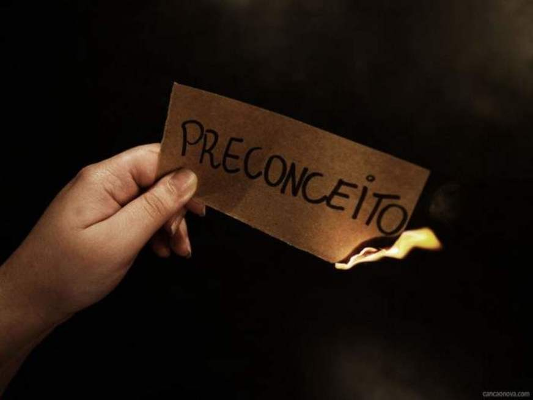

ESSENCIAL E INVISIVEL AOS OLHOS
O Tema
O Essencial é Invisivel aos Olhos é uma tema voltado para o preconceito em geral contando racismo homofobia e ETC, nós do 8 ano C fizemos este tema pois ele serve de conscientização para a sociedade 